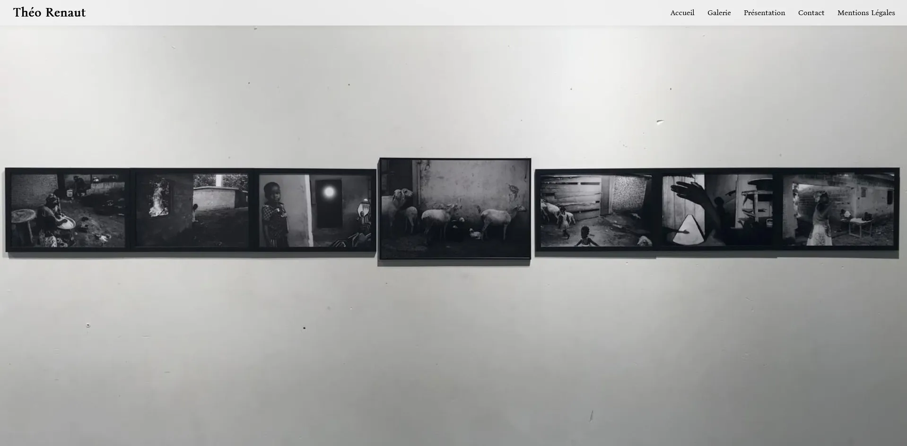
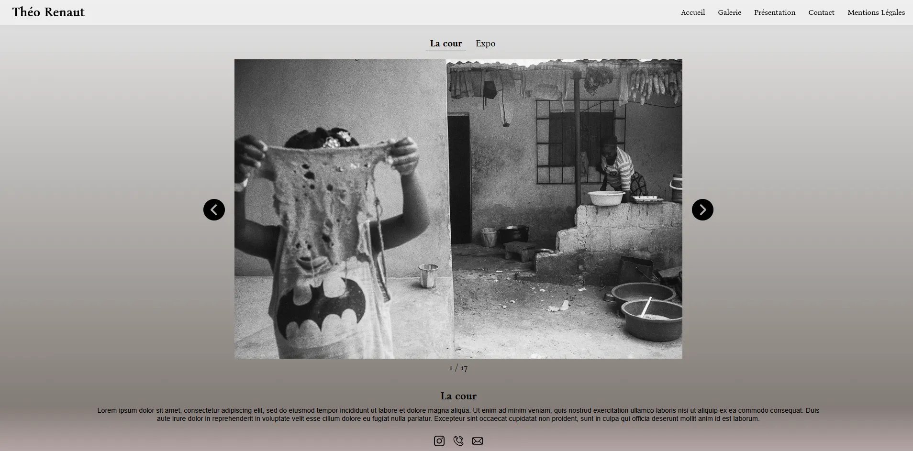
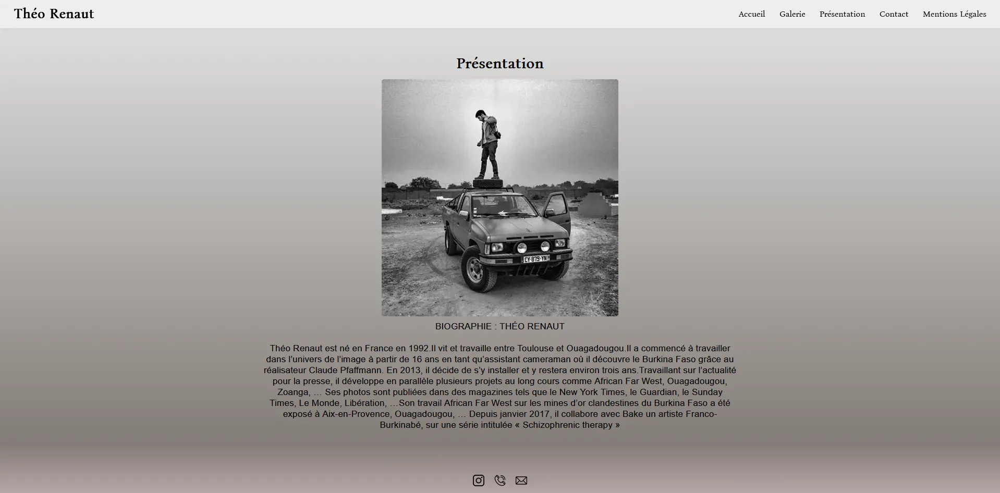
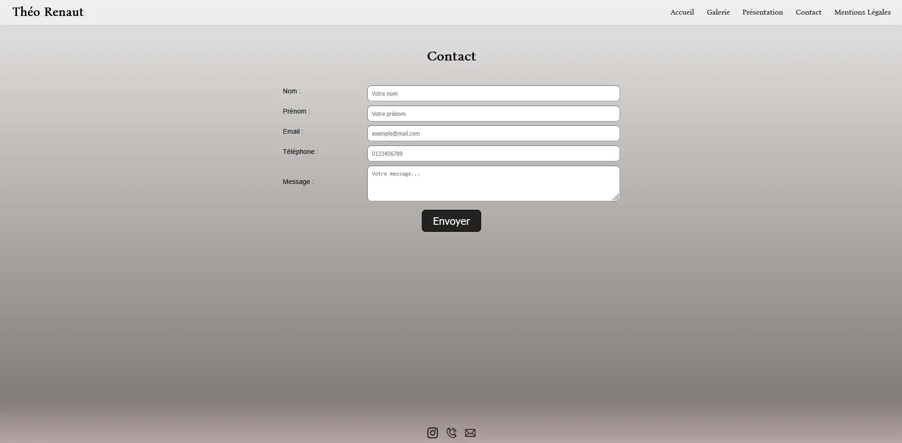
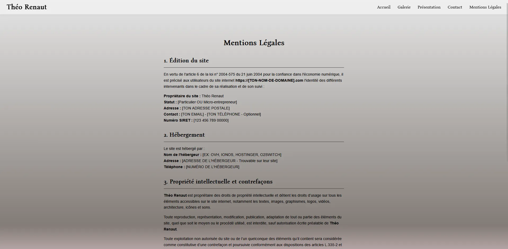
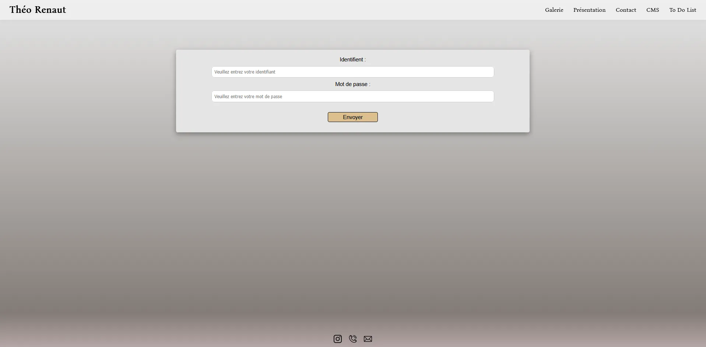
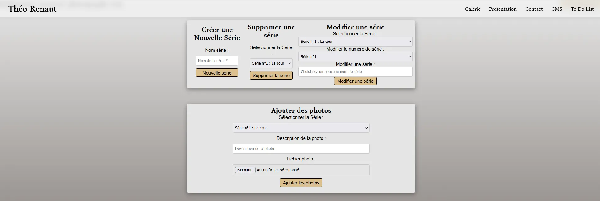
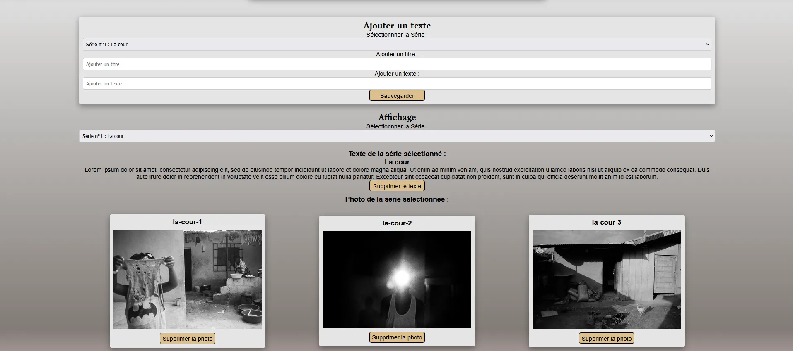
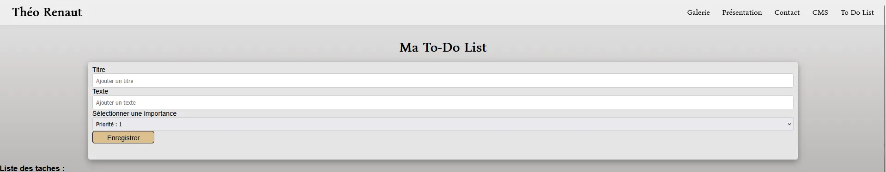

Projet Théo Renaut : Portfolio & CMS Sur-Mesure
Réalisé dans le cadre de mon stage de BTS, ce projet consistait à créer une solution web complète pour un photographe professionnel. Pour répondre à son besoin d'autonomie, j'ai développé l'application en deux parties : d'un côté, un site vitrine public fluide pour exposer ses œuvres et faciliter la prise de contact ; de l'autre, un espace d'administration privé (CMS). Ce back-office sur-mesure lui permet non seulement de gérer facilement ses galeries photos, mais intègre également un gestionnaire de tâches dédié à son activité professionnelle.
Architecture & Technologies
Pour garantir un code propre, maintenable et évolutif, j'ai conçu l'ensemble du Back-end en PHP Orienté Objet (POO) en respectant l'architecture MVC (Modèle-Vue-Contrôleur).
- Architecture MVC : Séparation stricte de la logique métier (Modèles), de l'interface utilisateur (Vues) et du traitement des requêtes (Contrôleurs).
- Base de données (MySQL) : Modélisation relationnelle optimisée avec requêtes préparées (PDO) pour contrer les failles par injection SQL.
- Sécurité : Hachage des mots de passe (Bcrypt), gestion sécurisée des sessions utilisateur pour le back-office, et filtrage strict lors de l'upload des images.
- Front-end : HTML5, CSS3 (design 100% responsive) et JavaScript natif pour les appels API (Fetch) de la galerie.
- Base de données (MySQL) : Modélisation relationnelle optimisée pour gérer efficacement les entités (Séries, Photos, Textes, Utilisateurs).
- Sécurité : Prévention des injections SQL (requêtes préparées PDO), protection contre les failles XSS (nettoyage systématique des entrées utilisateurs), hachage des mots de passe (Bcrypt) et validation stricte des types MIME lors des uploads.
Site Vitrine :
Accueil

Une page d'accueil immersive conçue pour capter l'attention dès les premières secondes. Elle intègre un carrousel d'images fluide et en plein écran, offrant un premier aperçu percutant du style et du travail du photographe.
Galerie

Le cœur du site vitrine. Cette page présente les œuvres du photographe à travers un système de filtrage dynamique par séries. Les données et les images sont récupérées de manière asynchrone via une API JavaScript (fetch), garantissant une navigation fluide sans rechargement de page.
Présentation

Un espace dédié à la biographie et à la démarche artistique du photographe. Le design épuré, pensé pour l'accessibilité visuelle (contraste des couleurs respectant les normes WCAG), permet de mettre en valeur son parcours professionnel.
Contact

Une interface permettant aux futurs clients ou collaborateurs de joindre directement le photographe. L'intégration de la page respecte le style global du site, assurant une navigation cohérente.
Mentions légales

Page regroupant les informations juridiques obligatoires, assurant la conformité du site avec la législation web en vigueur (hébergement, droits d'auteur des photographies).
Site CMS
Connexion

La porte d'entrée sécurisée vers le panneau d'administration. L'accès est protégé par un système d'authentification PHP robuste, gérant les sessions utilisateurs et vérifiant le hachage des mots de passe en base de données pour empêcher toute intrusion.
CMS


L'interface d'administration sur-mesure. Développée en PHP Orienté Objet (POO), elle offre une autonomie totale (CRUD) au photographe. Il peut y créer et modifier ses séries, leur attribuer un texte de présentation unique, et y uploader ses clichés. Pour garantir la sécurité et les performances du site, le système vérifie strictement le type MIME de chaque fichier lors de l'upload, puis redessine et convertit automatiquement les images au format optimisé .webp avant de les stocker.
To do list

Un outil de productivité intégré directement au cœur du CMS. Il permet au photographe d'organiser facilement ses tâches courantes (suivi des retouches, préparation des futurs shootings, rendez-vous clients) sans avoir à quitter son espace de travail.